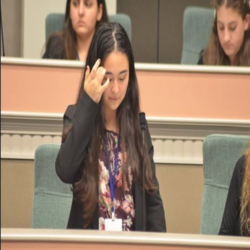
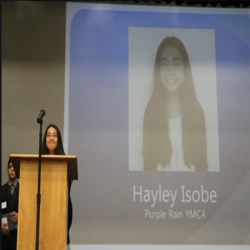
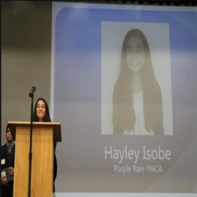

Hayley Isobe
My name is Hayley Isobe and I am currently a second year Education, Society, and Human Development major at University of California, Riverside. I came into college wanting to become a teacher, but after taking my lower division courses, I found a passion within education policy. At first, I had wanted to become a teacher because I had always pictured myself in the classroom and helping other students. Another aspect about being a teacher that peaked my interest was the idea of helping children like my sister Megan, who is autistic. While being at UC Riverside, I had taken classes about education that have made me even more interested and excited to have chosen this as my career. The field of education includes a wide variety of jobs and resources, that are often overlooked but very important to the value of children’s education.
After receiving my bachelors, I hope to attend a university with a dual enrollment program to receive my masters in public policy, as well as a juris doctorate degree. With a law degree, I hope to learn more about the legal process of amending laws, learning about the ones in place, and creating my own. The masters in public policy will prepare me for a career within the field of working with others who also want to spark a change and see a difference in their communities. Schools I hope to attend are Stanford, USC, UCLA, Pepperdine, or Chapman; only to name a few. Grad and law school are goals of mine that I know I can reach, and I continuously strive to do.
With both of these degrees, I plan to go into education policy and become an analyst. My goal is to ensure all children have an equal opportunity and fair accessibility to a quality education. Through my lower division courses and my own research and observations, I have found many disparities within education that I would like to change. These include a history curriculum representative of all cultures, diversity among teachers, and fair opportunities present across all schools. Education has always been my top priority, but getting to study the history, implications, and the injustices that are institutionalized within the school system has made my passion reach an all time high. I feel this sense of needing to help every child and ensure they have the right to an education, but an overwhelming feeling of wanting to make change for children with special needs, just like my sister. When I have the ability to go into the field of education policy and make change, my sister will be out of school but I do not want other families to go through the same challenges with trying to get individualized and effective curriculum for their children with special needs.
Experience
Office Assistant
• Process applications and feimbursement forms
• Work independently as well as help students who come in
• Experience with Access and Adobe Acrobat
Clerk
• Responsible relaying information to committee
• Assisting officers such as President, and Vice President
• Speaker in the California State Capitol
ASB Secretary
• Approve fundraisers, activities, clubs, and other school events
• Attended staff and student leadership meetings
• Responsible for minutes during meetings
Education
UC Riverside
San Pedro High School
Portfolio



